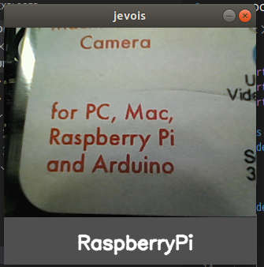

手書き文字の認識にはMNISTを用いたディープラーニングが入門編としてよく紹介されていますが、業務レベルで使用できる有名な紙の書類の文字認識として、Googleがオープンソースで提供している「Tesseract(テッセラクト)」があります。
Tesseractが素晴らしい理由として、日本語のOCRにも対応している上に、OpenCVでもモジュールとして使用できる点があります。
今回はこちらの記事を参考に、TesseractをJeVois上で実行する方法について紹介します。
1. Pythonの新規モジュールプロジェクトを作成
TesseractはPythonで提供されているため、これまで紹介したC++のプロジェクトとは実装言語が異なります。しかし環境の構築方法や開発・デバイスでの実機動作についてはほぼ同じプロセスで行うことができます。
・環境構築については、こちらを参考にしてください
新規モジュールを作成するには、C++の場合はjevois-create-moduleコマンドを使用しましたが、Pythonの場合はjevois-create-python-moduleを使用します
$ jevois-create-python-module Whitepaper TesseractOCR
すると、C++の場合と同様にモジュールのフォルダが作成されます。一点C++の場合と相違があるのは、src以下のディレクトリに.Cファイルではなく.pyファイルが作成されることです。
$ tree ./tesseractocr
tesseractocr
├── CMakeLists.txt
├── COPYING
├── INSTALL
├── README.md
├── rebuild-host.sh
├── rebuild-platform.sh
├── share
│ └── README.txt
└── src
└── Modules
└── TesseractOCR
├── TesseractOCR.py
└── postinstall
2. TesseractOCRを使ったPython実装
続いて、src/Modules/TesseractOCR/TesseractOCR.pyを編集します。
import libjevois as jevois
import cv2
import numpy as np
class TesseractOCR:
def __init__(self):
# Tesseractの初期化
self.ocr = cv2.text.OCRTesseract_create()
def process(self, inframe, outframe):
img = inframe.getCvBGR()
# 画像をTesseractに渡して、認識した文字を返す
txt = cv2.text_OCRTesseract.run(self.ocr, img, 50)
# 認識した文字を画像に表示
msgbox = np.zeros((60, img.shape[1], 3), dtype = np.uint8) + 80
cv2.putText(msgbox, txt, (3, 40), cv2.FONT_HERSHEY_SIMPLEX,
0.8, (255,255,255), 2, cv2.LINE_AA)
out = np.vstack((img, msgbox))
# 画像をシリアル経由で返す
outframe.sendCv(out)
C++の場合と比べて、Pythonは非常にシンプルにかけます。process関数に引数として入力フレームと出力フレームが渡されるので、
- 入力フレームから画像を取得
- 画像をTesseractで解析し、OpenCVで画像操作する
- 操作した画像を出力フレームに渡す
といった感じで処理してあげればOKです。process関数内で処理してあげることに注意すれば、通常のPythonを使ったOpenCVのプロジェクトとほとんど相違なく実装を進めることができます。
3. ホストでの実行
続いてPythonのプログラムをホストマシンで実行します。まずはプロジェクトをホストビルドします
$ ./rebuild-host.sh
次に、ビデオマッピングの設定ファイルに、TesseractOCRを追加します。
$ echo "YUYV 320 300 30 YUYV 320 240 30 Whitepaper TesseractOCR" | sudo tee -a /jevois/config/videomappings.cfg
カメラデバイスが接続されていることを確認し、
$ v4l2-ctl --list-devices
USB_Camera: USB_Camera (usb-0000:00:0c.0-2):
/dev/video0
/dev/video1
さらにjevois-daemonでビデオマッピングのIDを調べます
$ jevois-daemon
> listmappings
...
37 - OUT: YUYV 320x308 @ 30fps CAM: YUYV 320x240 @ 30fps MOD: JeVois:TensorFlowEasy C++
38 - OUT: YUYV 320x300 @ 30fps CAM: YUYV 320x240 @ 30fps MOD: Whitepaper:TesseractOCR Python
39 - OUT: YUYV 320x290 @ 60fps CAM: YUYV 320x240 @ 60fps MOD: JeVois:FirstVision C++
...
> quit
こちらの環境では、38番に割り振られていたため、このIDとデバイスパスを指定して、再度jevois-daemonを起動します。
$ jevois-daemon --videomapping=38 --cameradev=/dev/video0
実行した結果がこちら

バチッと認識してくれるわけではなさそうですが、それなりに文字おこしが出来ていることが確認出来ました。
4. JeVoisデバイスでTesseractOCRを実行
jevois-daemonを一旦止めて、最後にJeVoisにモジュールを書き込んで、JeVois上でOCRを実行してみましょう。
$ jevois-usbsd start
$ ./rebuild-platform --live
guvcviewでJeVoisから送られてくる処理済みの画像を確認します
$ guvcview -d /dev/video2
ホストマシンと同様に、OCR処理された画像を確認することができました。
コメント